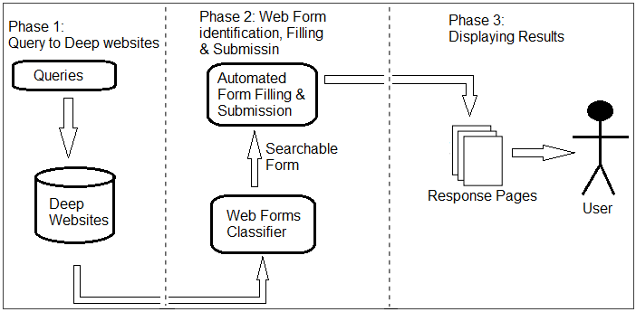
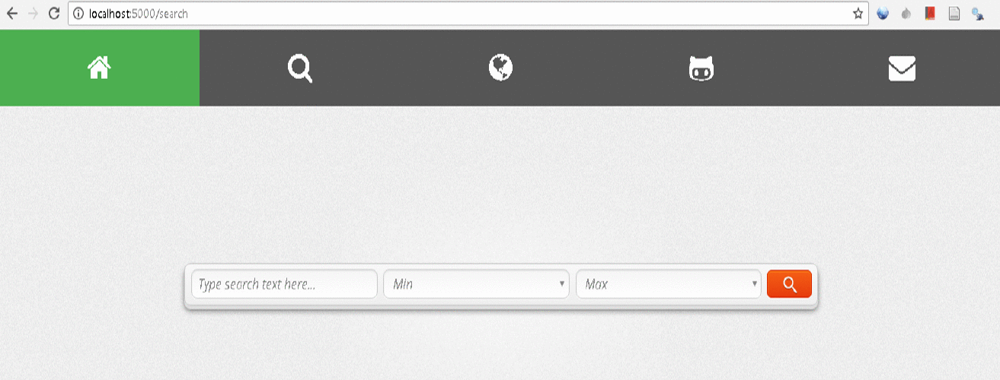

Abstract
Exponential growth of Web imposes a major challenge for retrieving and searching data across the Web for many information retrieval and data mining (i.e. text mining) tasks. Since web users usually depend upon search engines such as Google, Yahoo, Bing, etc., but these search engines rely on link crawling strategies to index the static web pages (aka Surface Web) and lots of other massive and quality portion of web is being hidden from these engines, which is also known as the Deep Web. The immense and high quality data form the Deep Web is also useful for building knowledge based databases. Discovering and extracting the vast content from the deep web tends to a major research challenge for knowledge discovery and information retrieval community. We explored the factors preventing typical search engines from indexing Deep Web contents & provided the solution in such a way that Deep Web contents can be extracted and exposed to web searchers. The proposed DWX system has a cloud based web application for Crawling & Data Discovery from Deep Web. The proposed DWX system allowed a web user to set a specific query (e.g. keywords relating to specific topic), and to retrieve the significant information in an effective way using machine learning techniques.
Approach
The proposed architecture of system DWX comprises of the following major com-ponents as shown in Figure:

Below a description of each component is presented:
User Interface:
It presents a high level interface to the user for passing queries. This interface passes that query to the deep web resources related to user specified queries.
Form Classifier:
It identifies the web form present in a website and check whether it is a searchable form or not. If the form is a searchable, it will identify the fields in that form.
Automated Form Filling & Submission:
The identified searchable form field by Form Classifier is automated filled with user specified query and submitted it for response.
Response Results:
The returned response by submitting the web form is displayed to user that is searching the required information.
Results
Below is the DWX implementation running in real time:

Below are some pertinent stats for the machines we used:
Stats for Intel(R) Core(TM) i7-3770 CPU:
8 cores: 3.40 GHz
RAM: 16 GB
OS: Windows 7 Professional
References
[1] S. Raghavan and H. Garcia-Molina, "Crawling the hidden web," 2000.
[2] J. Caverlee, L. Liu, and D. Buttler, "Probe, cluster, and discover: Focused extraction of qa-pagelets from the deep web," in Data Engineering, 2004. Proceedings. 20th International Conference on, pp. 103-114.
[3] V. Crescenzi, G. Mecca, and P. Merialdo, "Roadrunner: Towards automatic data extraction from large web sites," in VLDB, 2001, pp. 109-118.
[4] J. Madhavan, D. Ko, Ł. Kot, V. Ganapathy, A. Rasmussen, and A. Halevy, "Google's deep web crawl," Proceedings of the VLDB Endowment, vol. 1, pp. 1241-1252, 2008.
[5] L. Barbosa and J. Freire, "An adaptive crawler for locating hidden-web entry points," in Proceedings of the 16th international conference on World Wide Web, 2007, pp. 441-450.
Work was done at Pattern Recognition (PR) Lab, DCIS, PIEAS, Nilore, Islamabad, Pakistan.